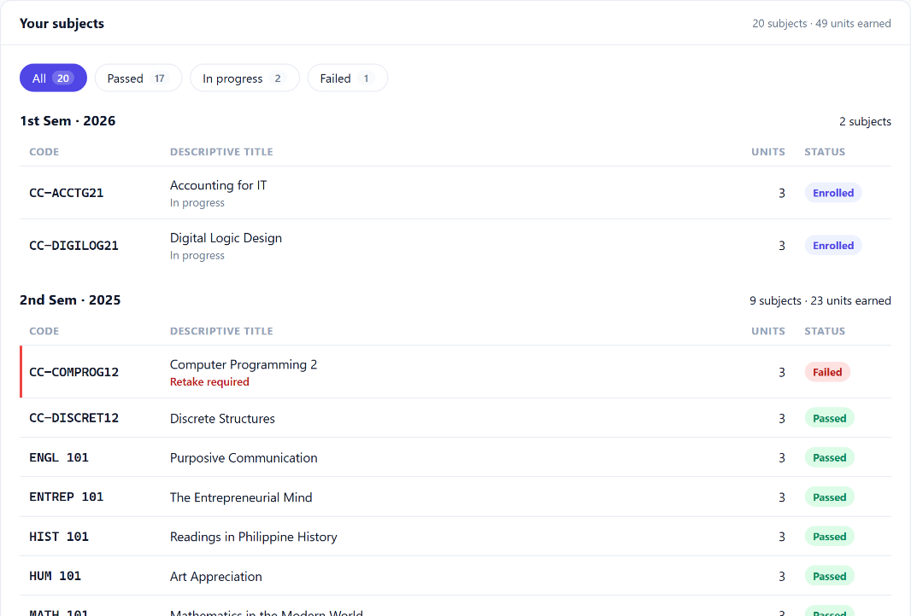
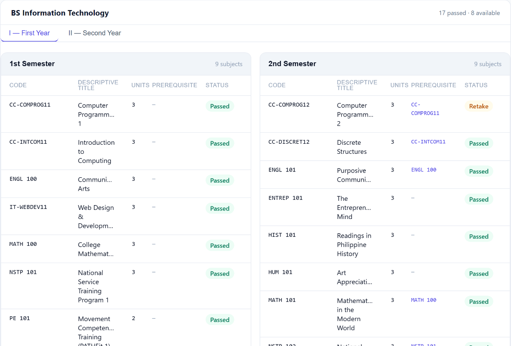
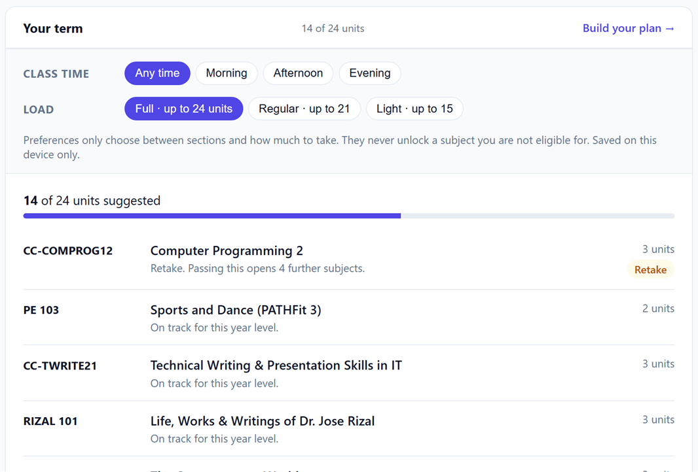
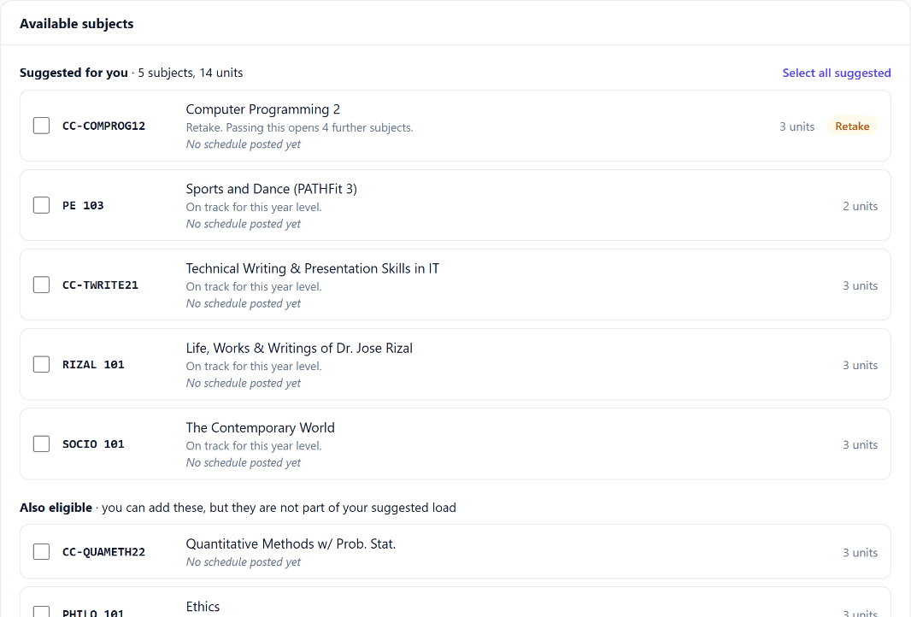
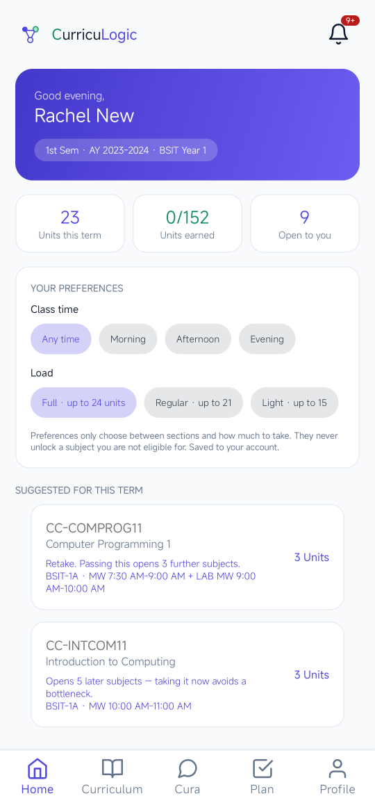
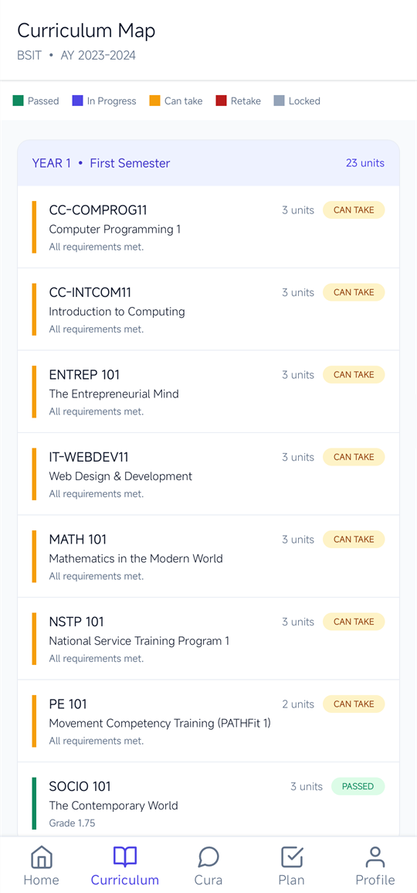
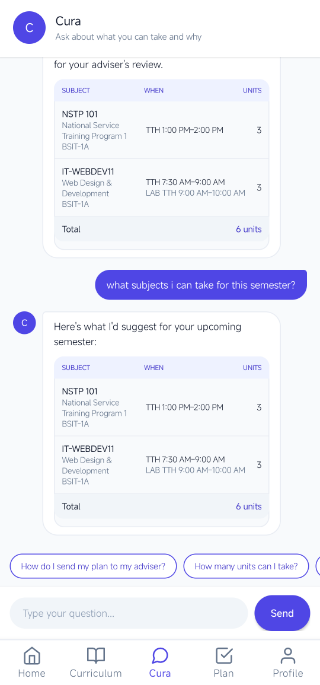
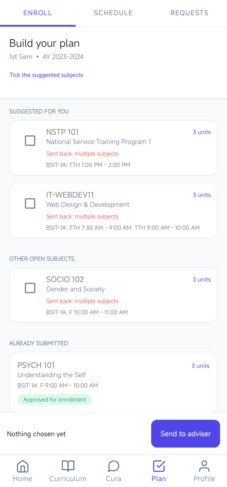

Prerequisite verification
Every subject in your prospectus is checked against your academic record before enrolment — so you know where you stand before you meet your adviser.
CurricuLogic · Subject recommendation
CurricuLogic reads your academic record against your program’s prospectus, checks every prerequisite chain, and explains each result in plain language.
Why IT-SAD21 is locked
Three things the system does before you ever queue at the registrar.
Every subject in your prospectus is checked against your academic record before enrolment — so you know where you stand before you meet your adviser.
When a subject is locked, you see the exact reason — which prerequisite is missing, which year standing is required, and what to take first.
A suggested subject load for the coming term that respects unit limits, sequencing, and what you still need to graduate on time.
The department uploads your grades and the registrar verifies your record. Subjects passed, failed, and in progress are all read.
Every prerequisite chain, year standing, and elective group in the curriculum of your program is checked — subject by subject.
Each subject shows as passed, in progress, can take, retake, or locked — with the specific requirement behind every locked subject spelled out.
Build your plan and send it as an advising request. Your faculty adviser reviews and approves it, then prints your enrollment form. CurricuLogic advises — it does not enrol you.
Academic record · sample student data








CurricuLogic is an academic advising system for the University of Cebu, built as a capstone project of the College of Computer Studies.
Eligibility comes from the prerequisite rules published in your prospectus, applied step by step. Nothing is trained on data, so the same record always gives the same answer.
A locked subject names the exact requirement that failed, so you and your adviser can check the result instead of taking it on trust.
CurricuLogic does not enrol students or handle payments. Your faculty and the registrar still review and approve your plan.
No. It is advisory only: it shows what you can take and why. You send your plan as an advising request, and faculty and the registrar review and approve it.
The eligibility decision is rule-based, not machine learning. It applies the prerequisite rules from your prospectus, so every result can be traced back to a rule.
You, and the faculty and registrar staff who review student records and advising requests.
Create an account to check your eligibility, or sign in if you already have one.